The Birth of Herself
Personal work / 2026.7
↗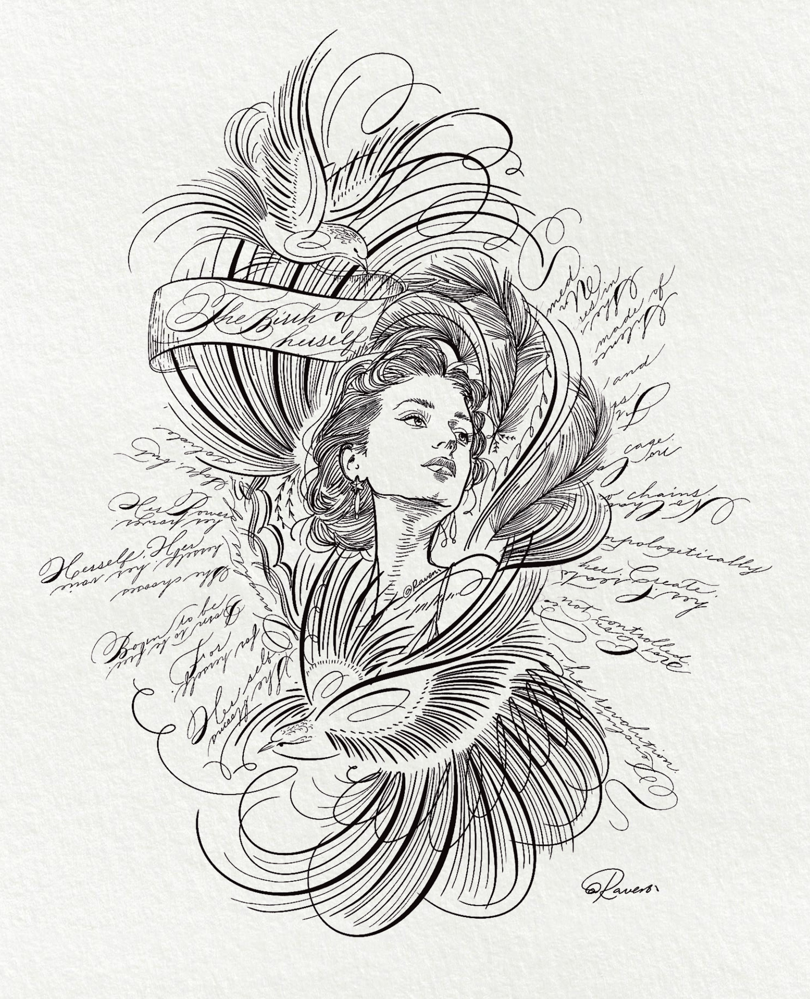
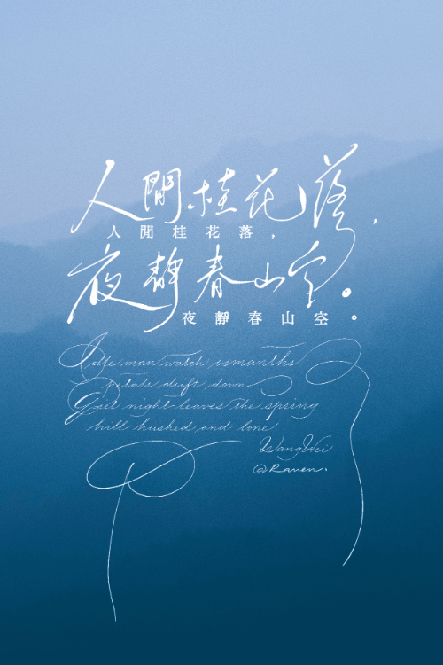
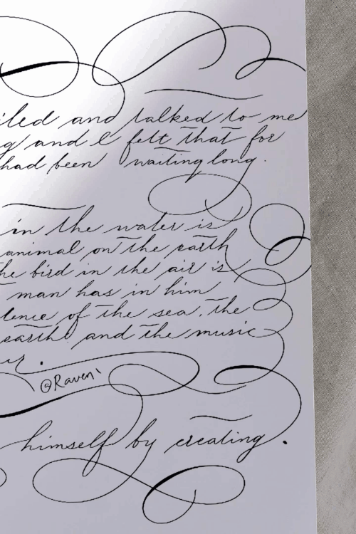
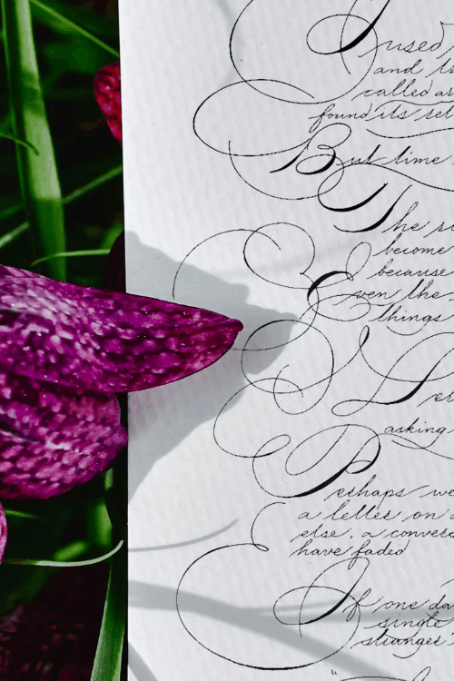
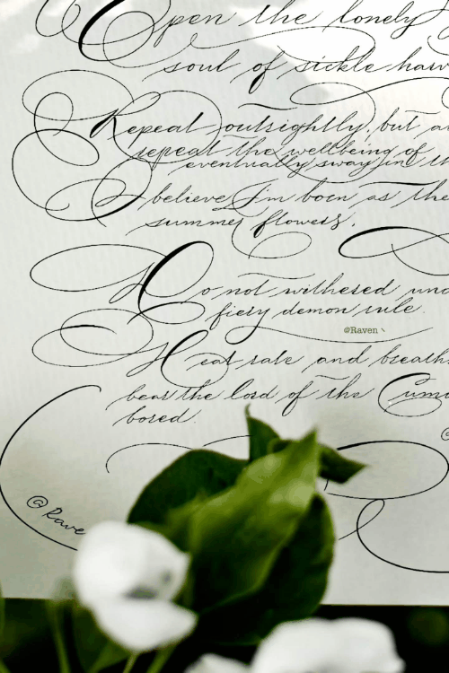
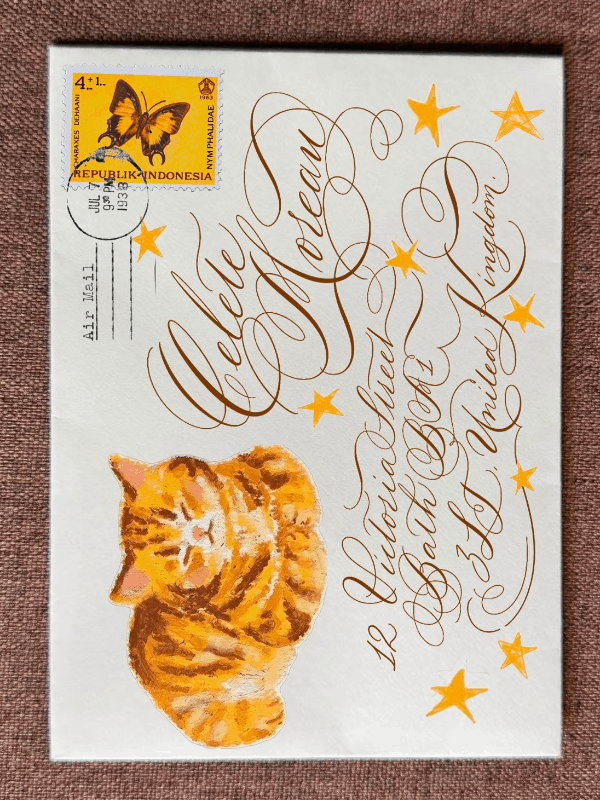
About the practice
Hi, I’m Raven. I studied piano at a conservatory, but somewhere between scales and late-night practice, I fell hard for calligraphy. 🎹✒️ I’ve been making English letterforms since 2015, and I still chase the same thing I loved in music: a line with breath, rhythm, and a little room to surprise you.
More about Raven↗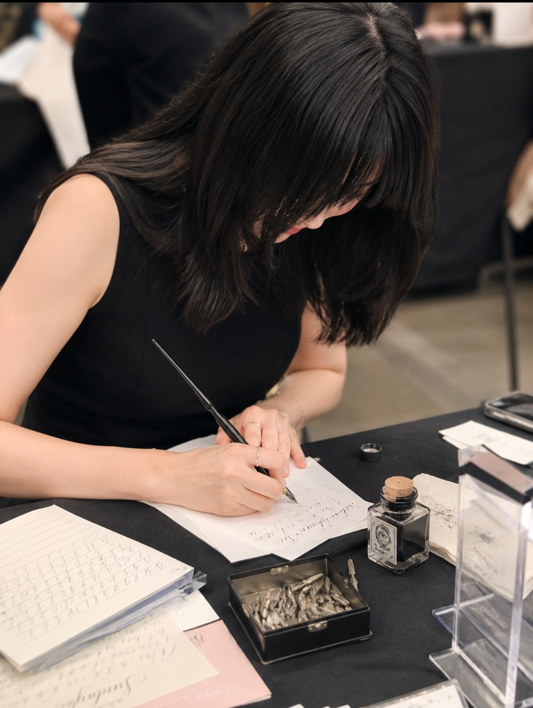
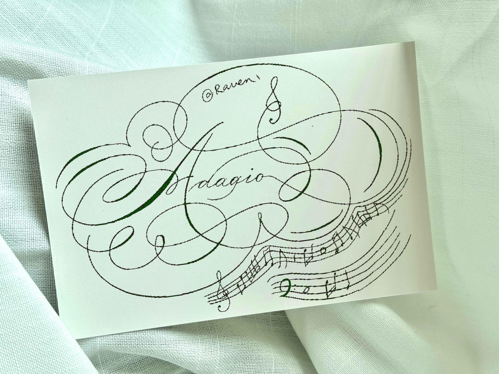
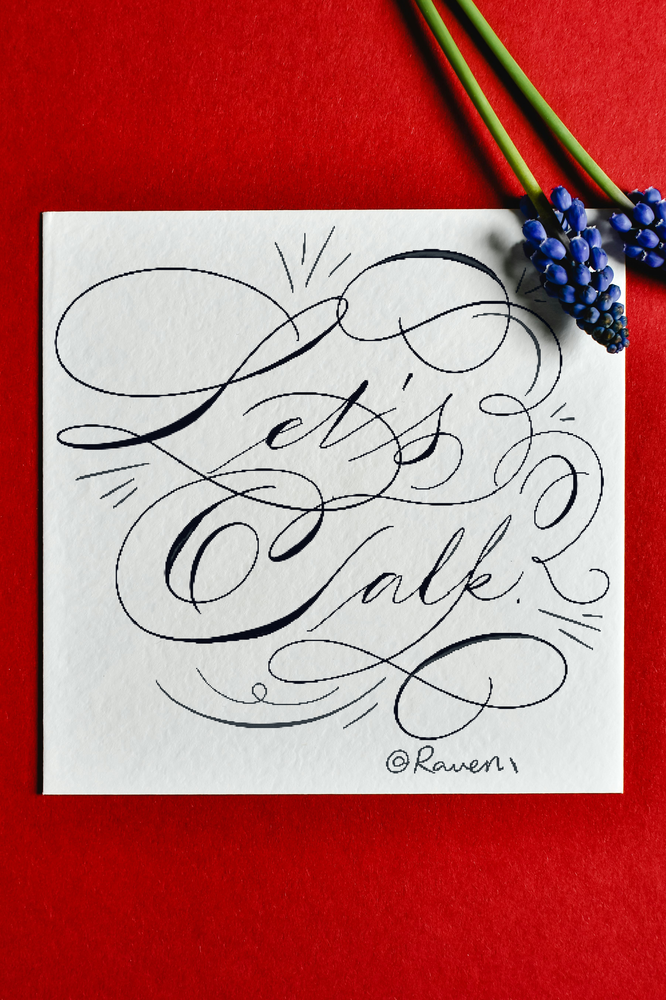
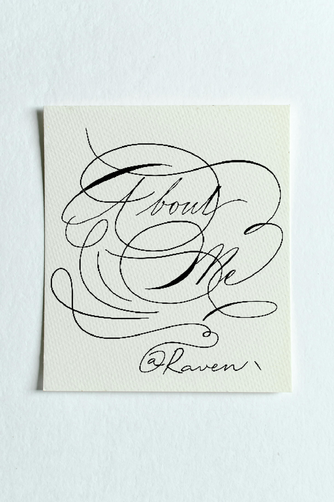
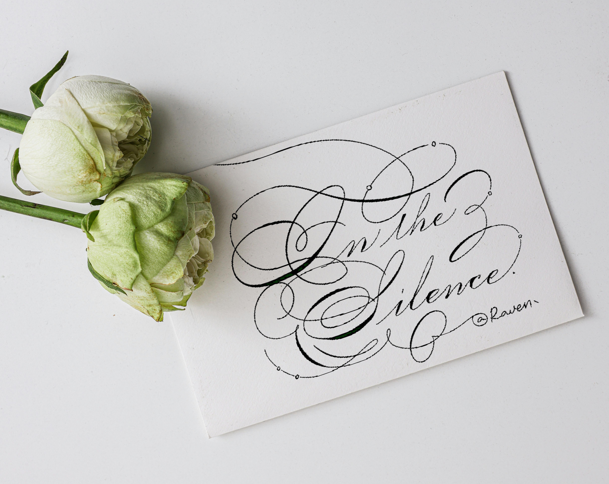
A loose taxonomy of marks, commissions, and things still becoming.
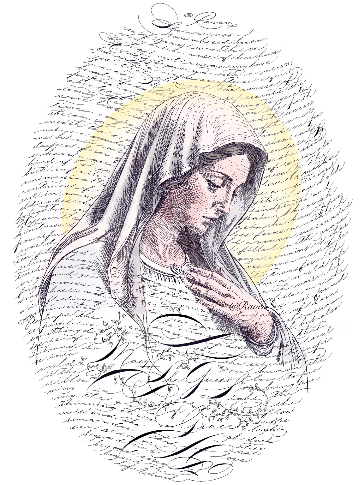
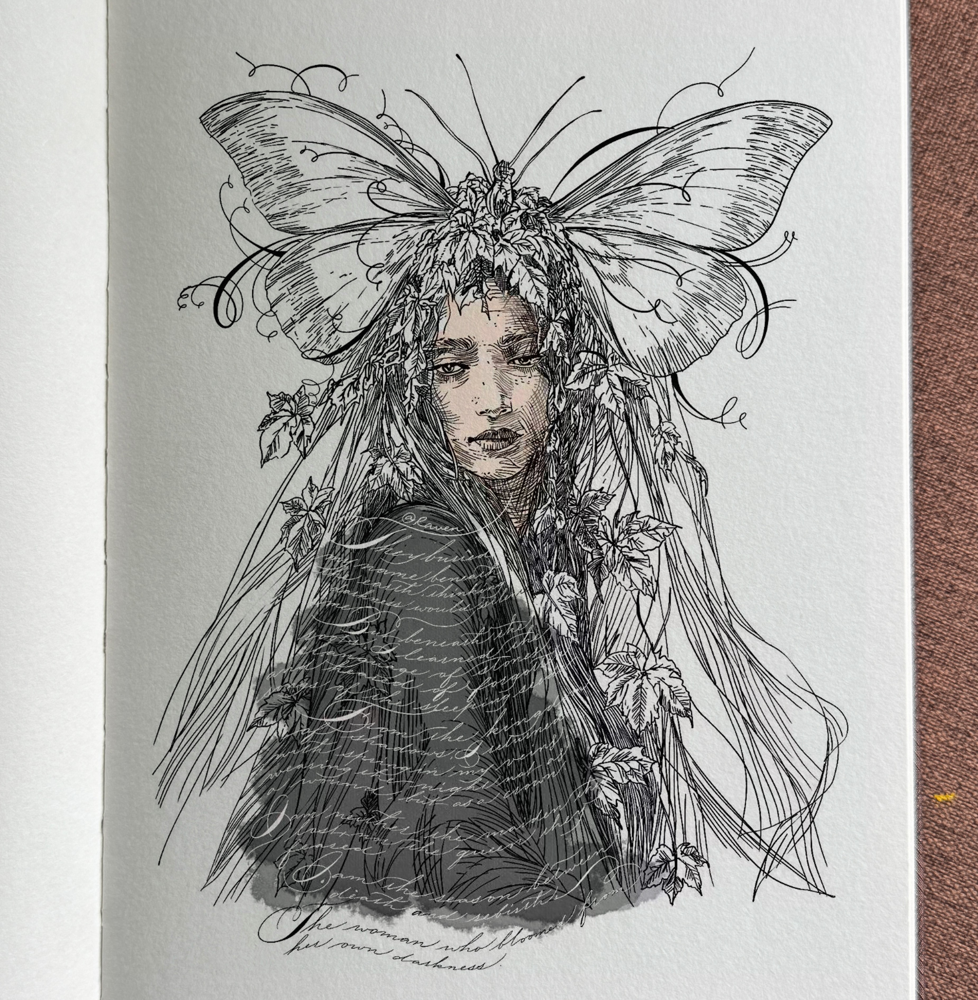
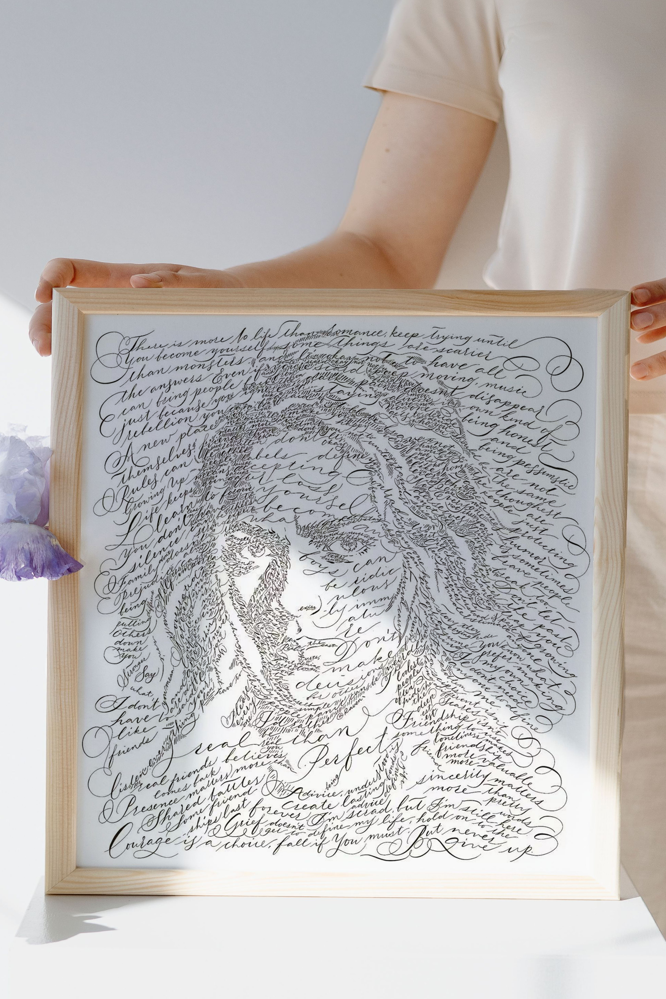
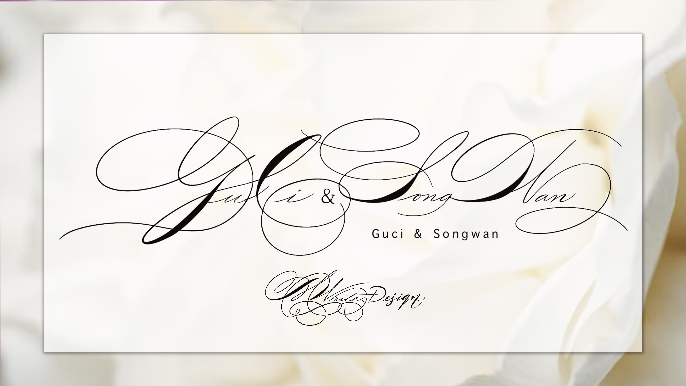
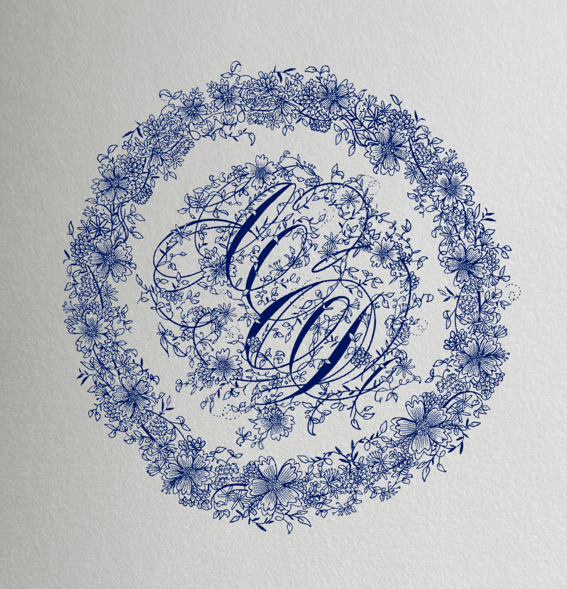
For people who want language to feel like a material. Available for selected commissions, cultural projects, and editorial worlds.
Start a conversation ↗Wordmarks, logotypes, and a visual voice with a human pulse.
Cover art, title treatments, and letters that hold the page.
Motion studies, installations, and responsive gestures for screens.